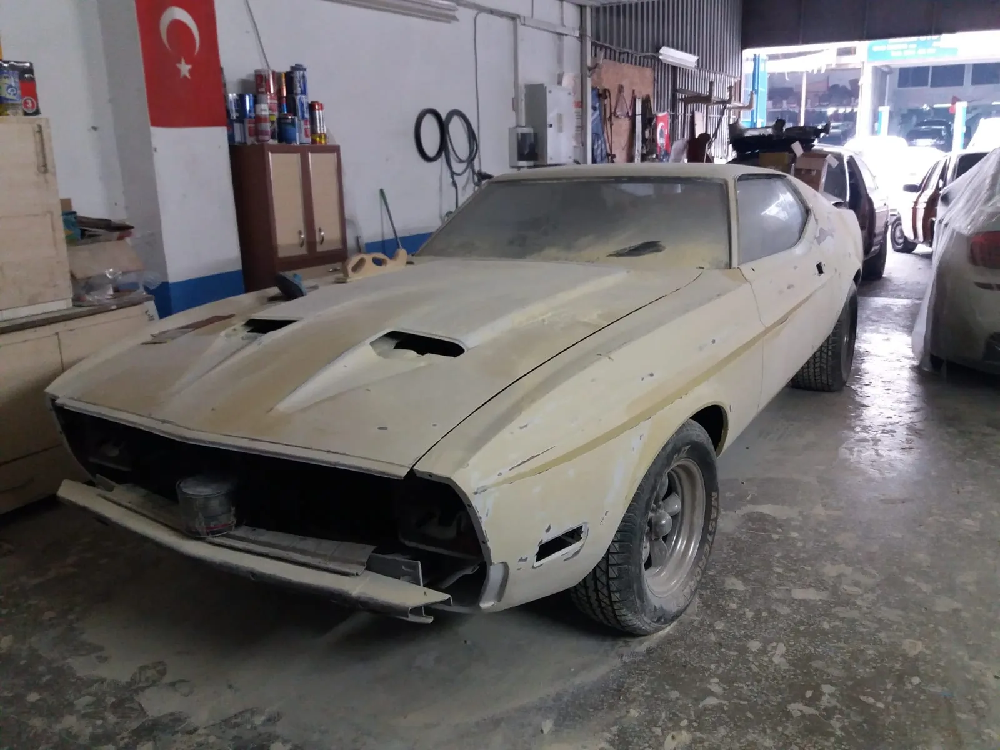
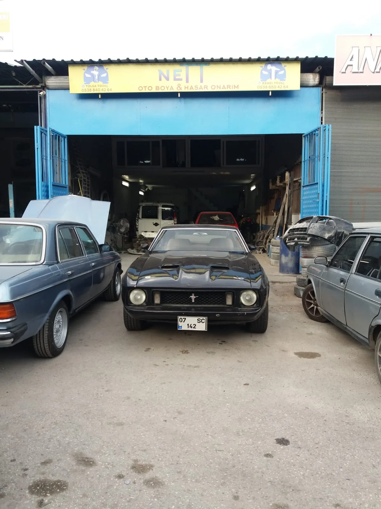
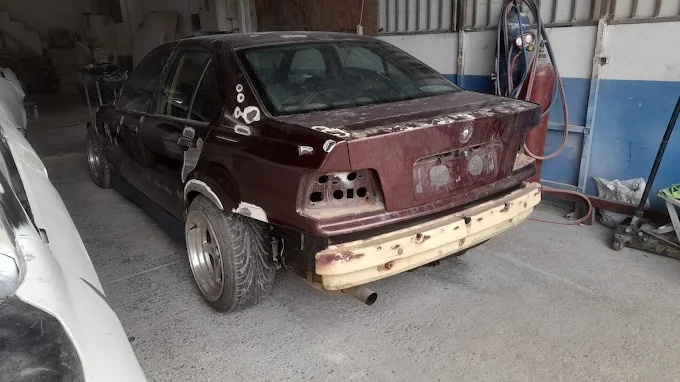
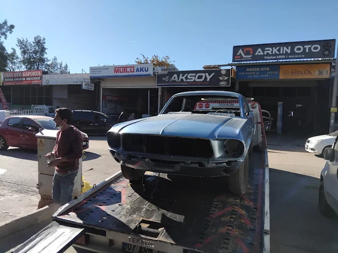

Oto Boya
Fırınlı kabinde tozsuz ortamda kusursuz boya uygulaması. PPG ve Standox markalarıyla orijinal renk garantisi.
Detayları Ä°ncele →Kaporta Onarım
Orijinal hatları bozmayan profesyonel darbe ve panel düzeltme. Şase geometrisini koruyan milimetrik işlem.
Detayları Ä°ncele →Lokal Boya
Sürtme ve çiziklerde parçanın tamamını boyamadan, renk geçişsiz şekilde sadece hasarlı alanı yeniliyoruz.
Detayları Ä°ncele →GüneÅŸ Yanığı Tamiri
Antalya sıcağında zarar gören vernikleri yenileyerek aracınızı mat görünümden kurtarıyoruz.
Detayları Ä°ncele →Restorasyon
Klasik ve vintage araçları, orijinalliğine sadık kalarak kaporta ve boya aşamalarında baştan sona topluyoruz.
Detayları Ä°ncele →Tampon & Parça Boyama
Plastik tampon hasarları ve ufak kaporta parçaları için hızlı ve ekonomik boya çözümleri.
Detayları Ä°ncele →Uygun Araç Boyama
Hasara göre gereksiz işlemden kaçınan, şeffaf kapsamlı ve fırınlı boya destekli ekonomik boyama planı.
Detayları Ä°ncele →Hasarlı Araç Kaporta
Kazalı ve ezikli araçlarda panel hizası, şase kontrolü, kaporta düzeltme ve boya hazırlığı.
Detayları Ä°ncele →Akdeniz Sanayi Oto Boyama
Antalya Akdeniz Sanayi'de fırınlı boya, renk eşleştirme ve kaporta hazırlığı tek süreçte.
Detayları Ä°ncele →Kaza Sonrası Boya
Kaza sonrası hasar tespiti, panel düzeltme, renk geçişi, fırınlı boya ve teslim kontrolü.
Detayları Ä°ncele →Parça Boyama Fiyatları
Kapı, tampon, çamurluk, kaput ve tavan boyamada fiyatı belirleyen teknik işçilik kalemleri.
Detayları Ä°ncele →SONUÇLARI GÖRÃœN
Tamamlanan projelerimizden seçki  her kare kusursuz işçiliğimizin kanıtı
.webp) Öncesi
Öncesi.webp) Sonrası
SonrasıLokal Çizik Onarımı
Tam parça boyamaya gerek kalmadan renk uyumuyla giderilen hasar.
.webp) Öncesi
Öncesi.webp) Sonrası
SonrasıKaporta ve Boya Düzeltme
Orijinal hatları geri kazandıran profesyonel kaporta işçiliği.
.webp) Öncesi
Öncesi.webp) Sonrası
SonrasıÇamurluk Göçük Düzeltme
Panel hizası korunarak yapılan kaporta ve boya işlemi.

Öncesi
SonrasıSürtme ve Çizik Onarımı
Renk uyumu korunarak yapılan lokal boya ile kusursuz sonuç.

Öncesi
SonrasıPanel Boya Yenileme
Profesyonel renk eşleştirme ve fırınlı boya uygulaması.
HİZMET VERDİĞİMİZ BÖLGELER
HEMEN TEKLÄ°F ALIN
Aracınızın fotoğraflarını WhatsApp üzerinden göndererek hızlı ekspertiz ve fiyatlandırma talep edebilirsiniz.